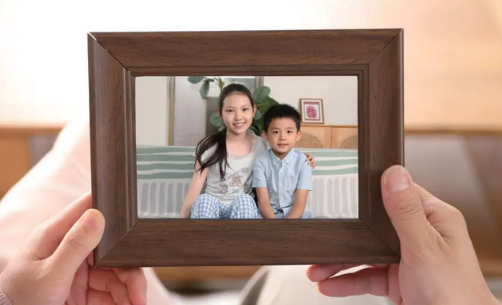

数字的表达
Số có thể viết bằng chữ số Ả Rập hoặc chữ Hán. Lưu ý: 100 一百, 1000 一千, 10000 一万, 100000000 一亿.
0–99 · 100–10000 · cách dùng 二 / 两

Diễn đạt sự sở hữu và phủ định bằng 没有.
Hỏi lại tình huống vừa được đề cập.
Sử dụng số từ và lượng từ 个、口.
Hỏi và trả lời về tuổi tác.
Chọn một từ, sau đó chọn hình ảnh tương ứng.
Nhấn vào thẻ để lật. Nhấn chữ Hán hoặc nút loa để nghe phát âm.
Số có thể viết bằng chữ số Ả Rập hoặc chữ Hán. Lưu ý: 100 一百, 1000 一千, 10000 一万, 100000000 一亿.
有 biểu thị sự sở hữu; dạng phủ định là 没/没有.
她有二十个学生。 🔊
我没有姐姐。 🔊
呢 ở cuối câu hỏi, dùng để hỏi lại tình huống đã nêu.
我有两个哥哥，你呢？ 🔊
我是中国人，你呢？ 🔊
Sau số từ thường cần lượng từ.
四口人，两个哥哥，两个学生。 🔊
几岁 thường hỏi trẻ nhỏ; 多大 dùng hỏi tuổi nói chung.
他今年几岁了？你今年多大了？ 🔊
Chọn nhân vật để ẩn lời thoại của vai đó. Nhấn vào dòng thoại để nghe.
Chọn đáp án đúng theo nội dung ba bài khóa.
1. 杨同乐家有几口人？
Gia đình Dương Đồng Lạc có mấy người?
2. 杨同乐有哥哥吗？
Dương Đồng Lạc có anh trai không?
1. 王一雪有几个儿子？几个女儿？
Vương Nhất Tuyết có mấy con trai, mấy con gái?
2. 王一雪儿子今年几岁？
Con trai Vương Nhất Tuyết năm nay mấy tuổi?